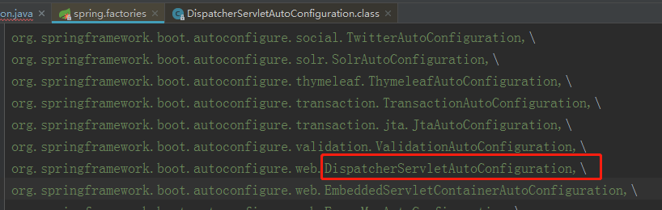

Spring容器中声明ServletRegistrationBean、FilterRegistrationBean、ServletListenerRegistrationBean。
先自定义一个Servlet，重写service实现自己的业务逻辑，然后通过@Bean注解往Spring容器中注入一个 ServletRegistrationBean类型的bean实例，并且实例化一个自定义的Servlet作为参数，这样就将自定义的Servlet加入Tomcat中了。
141public class ServletApplicationDemo {4... 5}6
7(urlPatterns = "/simple")8public class SimpleServlet extends HttpServlet {9
10 11 protected void service(HttpServletRequest req, HttpServletResponse resp) throws ServletException, IOException {12 resp.getWriter().write("receive by SimpleServlet");13 }14} @ServletComponentScan注解和@WebServlet、@WebFilter以及@WebListener注解配合使用。
@ServletComponentScan注解导入了ImportServletComponentScanRegistrar类，这个类是ImportBeanDefinitionRegistrar的实现类会被Spring容器所解析。ServletComponentScanRegistrar内部会解析@ServletComponentScan注解，然后会在Spring容器中注册ServletComponentRegisteringPostProcessor这个类就是BeanFactoryPostProcessor实现类，会去解析扫描出来的类是不是有@WebServlet、@WebListener、@WebFilter这3种注解。
会转换成ServletRegistrationBean、FilterRegistrationBean、ServletListenerRegistrationBean，然后让Spring容器去解析。
@ServletComponentScan源码。
1551(ElementType.TYPE)2(RetentionPolicy.RUNTIME)3(ServletComponentScanRegistrar.class)5public @interface ServletComponentScan {6 7 8}9
10// ServletComponentScanRegistrar11class ServletComponentScanRegistrar implements ImportBeanDefinitionRegistrar {12 private static final String BEAN_NAME = "servletComponentRegisteringPostProcessor";13 14 15 public void registerBeanDefinitions(AnnotationMetadata importingClassMetadata,16 BeanDefinitionRegistry registry) {17 // 获取扫描的类18 Set<String> packagesToScan = getPackagesToScan(importingClassMetadata);19 if (registry.containsBeanDefinition(BEAN_NAME)) {20 21 // 修改postProcessor22 updatePostProcessor(registry, packagesToScan);23 }24 else {25 26 // 添加postProcessor27 addPostProcessor(registry, packagesToScan);28 }29 }30 31 private void updatePostProcessor(BeanDefinitionRegistry registry,32 Set<String> packagesToScan) {33 BeanDefinition definition = registry.getBeanDefinition(BEAN_NAME);34 ValueHolder constructorArguments = definition.getConstructorArgumentValues()35 .getGenericArgumentValue(Set.class);36 ("unchecked")37 Set<String> mergedPackages = (Set<String>) constructorArguments.getValue();38 mergedPackages.addAll(packagesToScan);39 constructorArguments.setValue(mergedPackages);40 }41
42 private void addPostProcessor(BeanDefinitionRegistry registry,43 Set<String> packagesToScan) {44 GenericBeanDefinition beanDefinition = new GenericBeanDefinition();45 beanDefinition.setBeanClass(ServletComponentRegisteringPostProcessor.class);46 beanDefinition.getConstructorArgumentValues()47 .addGenericArgumentValue(packagesToScan);48 beanDefinition.setRole(BeanDefinition.ROLE_INFRASTRUCTURE);49 registry.registerBeanDefinition(BEAN_NAME, beanDefinition);50 }51
52 private Set<String> getPackagesToScan(AnnotationMetadata metadata) {53 AnnotationAttributes attributes = AnnotationAttributes.fromMap(54 metadata.getAnnotationAttributes(ServletComponentScan.class.getName()));55 String[] basePackages = attributes.getStringArray("basePackages");56 Class<?>[] basePackageClasses = attributes.getClassArray("basePackageClasses");57 Set<String> packagesToScan = new LinkedHashSet<>();58 packagesToScan.addAll(Arrays.asList(basePackages));59 for (Class<?> basePackageClass : basePackageClasses) {60 packagesToScan.add(ClassUtils.getPackageName(basePackageClass));61 }62 if (packagesToScan.isEmpty()) {63 packagesToScan.add(ClassUtils.getPackageName(metadata.getClassName()));64 }65 return packagesToScan;66 }67}68
69
70// 上一步注入的类 servletComponentRegisteringPostProcessor71class ServletComponentRegisteringPostProcessor72 implements BeanFactoryPostProcessor, ApplicationContextAware {73 74
75 private static final List<ServletComponentHandler> HANDLERS;76
77 static {78 List<ServletComponentHandler> servletComponentHandlers = new ArrayList<>();79 servletComponentHandlers.add(new WebServletHandler());80 servletComponentHandlers.add(new WebFilterHandler());81 servletComponentHandlers.add(new WebListenerHandler());82 HANDLERS = Collections.unmodifiableList(servletComponentHandlers);83 }84
85 private final Set<String> packagesToScan;86
87 private ApplicationContext applicationContext;88
89 // 构造器90 ServletComponentRegisteringPostProcessor(Set<String> packagesToScan) {91 this.packagesToScan = packagesToScan;92 }93
94 // 实例后调用95 96 public void postProcessBeanFactory(ConfigurableListableBeanFactory beanFactory)97 throws BeansException {98 // 是否是运行的容器99 if (isRunningInEmbeddedWebServer()) {100 // 创建provider101 ClassPathScanningCandidateComponentProvider componentProvider = createComponentProvider();102 for (String packageToScan : this.packagesToScan) {103 104 // 扫描包105 scanPackage(componentProvider, packageToScan);106 }107 }108 }109
110 // 扫描包111 private void scanPackage(112 ClassPathScanningCandidateComponentProvider componentProvider,113 String packageToScan) {114 for (BeanDefinition candidate : componentProvider115 .findCandidateComponents(packageToScan)) {116 if (candidate instanceof ScannedGenericBeanDefinition) {117 for (ServletComponentHandler handler : HANDLERS) {118 handler.handle(((ScannedGenericBeanDefinition) candidate),119 (BeanDefinitionRegistry) this.applicationContext);120 }121 }122 }123 }124
125 // 判断是否在运行中的servlet126 private boolean isRunningInEmbeddedWebServer() {127 return this.applicationContext instanceof WebApplicationContext128 && ((WebApplicationContext) this.applicationContext)129 .getServletContext() == null;130 }131
132 // 创建Provider133 private ClassPathScanningCandidateComponentProvider createComponentProvider() {134 ClassPathScanningCandidateComponentProvider componentProvider = new ClassPathScanningCandidateComponentProvider(135 false);136 componentProvider.setEnvironment(this.applicationContext.getEnvironment());137 componentProvider.setResourceLoader(this.applicationContext);138 for (ServletComponentHandler handler : HANDLERS) {139 componentProvider.addIncludeFilter(handler.getTypeFilter());140 }141 return componentProvider;142 }143
144 Set<String> getPackagesToScan() {145 return Collections.unmodifiableSet(this.packagesToScan);146 }147
148 // 获取applicationContext149 150 public void setApplicationContext(ApplicationContext applicationContext)151 throws BeansException {152 this.applicationContext = applicationContext;153 }154
155}41 (name = "dispatcherServlet")2 public DispatcherServlet myDispatcherServlet() {3 return new DispatcherServlet(); 4} 我们发现往Tomcat中添加Servlet、Filter或者Listener还是挺容易的。以前SpringMVC配置DispatcherServlet 是在web.xml中：
131<servlet>2 <servlet-name>dispatcher</servlet-name>3 <servlet-class> org.springframework.web.servlet.DispatcherServlet </servlet-class>4 <init-param>5 <param-name>contextConfigLocation</param-name>6 <param-value>classpath:spring-mvc.xml</param-value>7 </init-param>8 <load-on-startup>1</load-on-startup>9</servlet>10<servlet-mapping>11 <servlet-name>dispatcher</servlet-name>12 <url-pattern>/</url-pattern>13</servlet-mapping>和我们SpringBoot中配置Servlet相比是不是复杂很多，虽然SpringBoot中自定义Servlet很简单，但是其底层却不简单。
我们通过return new ServletRegistrationBean(new CustomServlet(), "/custom");就知道，ServletRegistrationBean里会存放目标Servlet实例和urlMapping,并且继承RegistrationBean这个类。
431public class ServletRegistrationBean extends RegistrationBean {2 //存放目标Servlet实例3 private Servlet servlet;4 //存放Servlet的urlMapping5 private Set<String> urlMappings;6 private boolean alwaysMapUrl;7 private int loadOnStartup;8 private MultipartConfigElement multipartConfig;9
10
11 public ServletRegistrationBean(Servlet servlet, String... urlMappings) {12 this(servlet, true, urlMappings);13 }14
15 public ServletRegistrationBean(Servlet servlet, boolean alwaysMapUrl, String... urlMappings) {16 this.urlMappings = new LinkedHashSet();17 this.alwaysMapUrl = true;18 this.loadOnStartup = -1;19 Assert.notNull(servlet, "Servlet must not be null");20 Assert.notNull(urlMappings, "UrlMappings must not be null");21 this.servlet = servlet;22 this.alwaysMapUrl = alwaysMapUrl;23 this.urlMappings.addAll(Arrays.asList(urlMappings));24 }25
26 public void onStartup(ServletContext servletContext) throws ServletException {27 Assert.notNull(this.servlet, "Servlet must not be null");28 String name = this.getServletName();29 if (!this.isEnabled()) {30 logger.info("Servlet " + name + " was not registered (disabled)");31 } else {32 logger.info("Mapping servlet: '" + name + "' to " + this.urlMappings);33 Dynamic added = servletContext.addServlet(name, this.servlet);34 if (added == null) {35 logger.info("Servlet " + name + " was not registered (possibly already registered?)");36 } else {37 this.configure(added);38 }39 }40 }41
42 //....43} 我们看到FilterRegistrationBean 中也保存了目标Filter对象，并且继承了RegistrationBean。
491public class FilterRegistrationBean extends AbstractFilterRegistrationBean {2 //存放目标Filter对象3 private Filter filter;4
5 public FilterRegistrationBean() {6 super(new ServletRegistrationBean[0]);7 }8
9 public FilterRegistrationBean(Filter filter, ServletRegistrationBean... servletRegistrationBeans) {10 super(servletRegistrationBeans);11 Assert.notNull(filter, "Filter must not be null");12 this.filter = filter;13 }14
15 public Filter getFilter() {16 return this.filter;17 }18
19 public void setFilter(Filter filter) {20 Assert.notNull(filter, "Filter must not be null");21 this.filter = filter;22 }23 }24
25 abstract class AbstractFilterRegistrationBean extends RegistrationBean {26 private static final EnumSet<DispatcherType> ASYNC_DISPATCHER_TYPES;27 private static final EnumSet<DispatcherType> NON_ASYNC_DISPATCHER_TYPES;28 private static final String[] DEFAULT_URL_MAPPINGS;29 private Set<ServletRegistrationBean> servletRegistrationBeans = new LinkedHashSet();30 private Set<String> servletNames = new LinkedHashSet();31 private Set<String> urlPatterns = new LinkedHashSet();32 //重写onStartup方法33 public void onStartup(ServletContext servletContext) throws ServletException {34 Filter filter = this.getFilter();35 Assert.notNull(filter, "Filter must not be null");36 String name = this.getOrDeduceName(filter);37 if (!this.isEnabled()) {38 this.logger.info("Filter " + name + " was not registered (disabled)");39 } else {40 Dynamic added = servletContext.addFilter(name, filter);41 if (added == null) {42 this.logger.info("Filter " + name + " was not registered (possibly already registered?)");43 } else {44 this.configure(added);45 }46 }47 }48 //略...49 } ServletListenerRegistrationBean也是一样，继承了RegistrationBean。
321public class ServletListenerRegistrationBean<T extends EventListener> extends RegistrationBean {2 //存放了目标listener3 private T listener;4
5 public ServletListenerRegistrationBean() {6 }7
8 public ServletListenerRegistrationBean(T listener) {9 Assert.notNull(listener, "Listener must not be null");10 Assert.isTrue(isSupportedType(listener), "Listener is not of a supported type");11 this.listener = listener;12 }13
14 public void setListener(T listener) {15 Assert.notNull(listener, "Listener must not be null");16 Assert.isTrue(isSupportedType(listener), "Listener is not of a supported type");17 this.listener = listener;18 }19
20 public void onStartup(ServletContext servletContext) throws ServletException {21 if (!this.isEnabled()) {22 logger.info("Listener " + this.listener + " was not registered (disabled)");23 } else {24 try {25 servletContext.addListener(this.listener);26 } catch (RuntimeException var3) {27 throw new IllegalStateException("Failed to add listener '" + this.listener + "' to servlet context", var3);28 }29 }30 }31 //略...32} 我们看下RegistrationBean这个类。
61 public abstract class RegistrationBean implements ServletContextInitializer, Ordered {2 ...3 }4 public interface ServletContextInitializer {5 void onStartup(ServletContext var1) throws ServletException; 6 } 我们发现RegistrationBean实现了ServletContextInitializer``这个接口，并且有一个onStartup方法， ServletRegistrationBean、FilterRegistrationBean、ServletListenerRegistrationBean都实现了onStartup方法。
ServletContextInitializer是Servlet容器初始化的时候，提供的初始化接口。所以，Servlet 容器初始化会获取并触发所有的FilterRegistrationBean、FilterRegistrationBean、ServletListenerRegistrationBean实例中onStartup方法。
当Tomcat容器启动时，会执行callInitializers，然后获取所有的ServletContextInitializer，循环执行 onStartup方法触发回调方法。
231public void configure(WebAppContext context) throws Exception {3 ClassLoader classLoader = Thread.currentThread().getContextClassLoader();4 Thread.currentThread().setContextClassLoader(context.getClassLoader());5 try {6 callInitializers(context);7 }8 finally {9 Thread.currentThread().setContextClassLoader(classLoader);10 }11}12
13private void callInitializers(WebAppContext context) throws ServletException {14 try {15 setExtendedListenerTypes(context, true);16 for (ServletContextInitializer initializer : this.initializers) {17 initializer.onStartup(context.getServletContext());18 }19 }20 finally {21 setExtendedListenerTypes(context, false);22 }23} 那FilterRegistrationBean、ServletListenerRegistrationBean实例是何时加入到Initializers集合的呢在Servlet容器的启动加入的。
631public class ServletWebServerApplicationContext extends GenericWebApplicationContext implements ConfigurableWebServerApplicationContext {2 3 protected void onRefresh() {4 // 调用父方法5 super.onRefresh();6 try {7 // 创建 WebServer8 createWebServer();9 } catch (Throwable ex) {10 throw new ApplicationContextException("Unable to start web server", ex);11 }12 }13 14 // 创建 WebServer 15 private void createWebServer() {16 WebServer webServer = this.webServer;17 ServletContext servletContext = getServletContext();18 // 如果 webServer 为空，说明未初始化19 if (webServer == null && servletContext == null) {20 // 获得 ServletWebServerFactory 对象21 ServletWebServerFactory factory = getWebServerFactory();22 23 // 重点方法 往下看 getSelfInitializer() 获取到serverl容器24 // 获得 ServletContextInitializer 对象25 // 创建（获得） WebServer 对象26 this.webServer = factory.getWebServer(getSelfInitializer());27 // TODO 芋艿这个情况是？28 } else if (servletContext != null) {29 try {30 getSelfInitializer().onStartup(servletContext);31 } catch (ServletException ex) {32 throw new ApplicationContextException("Cannot initialize servlet context", ex);33 }34 }35 // 初始化 PropertySource36 initPropertySources();37 }38
39 // 获得 ServletContextInitializer 对象40 private void selfInitialize(ServletContext servletContext) throws ServletException {41 // 添加 Spring 容器到 servletContext 属性中。42 prepareWebApplicationContext(servletContext);43 44 // 注册 ServletContextScope45 registerApplicationScope(servletContext);46 47 // 注册 web-specific environment beans ("contextParameters", "contextAttributes")48 WebApplicationContextUtils.registerEnvironmentBeans(getBeanFactory(), servletContext);49 50 51 // 我们来看下getServletContextInitializerBeans() 获取所有初始化Bean52 // 获得所有 ServletContextInitializer ，并逐个进行启动53 for (ServletContextInitializer beans : getServletContextInitializerBeans()) {54 beans.onStartup(servletContext);55 }56 }57 58 // getServletContextInitializerBeans() 获取所有初始化Bean59 protected Collection<ServletContextInitializer> getServletContextInitializerBeans() {60 return new ServletContextInitializerBeans(getBeanFactory());61 }62 63} ServletContextInitializerBeans是对ServletContextInitializer的一种包装。
我们看到ServletContextInitializerBeans 中有一个sortedList集合用于存放所有ServletContextInitializer，在构造方法中获取所有的ServletContextInitializer。
511public class ServletContextInitializerBeans2 extends AbstractCollection<ServletContextInitializer> {3 4 // 初始化5 private final MultiValueMap<Class<?>, ServletContextInitializer> initializers;6 // 初始化7 private final List<Class<? extends ServletContextInitializer>> initializerTypes;8
9 10 public ServletContextInitializerBeans(ListableBeanFactory beanFactory, 11 Class<? extends ServletContextInitializer>... initializerTypes) {12 // initializers13 this.initializers = new LinkedMultiValueMap<>();14 15 // initializerTypes16 this.initializerTypes = (initializerTypes.length != 0)17 ? Arrays.asList(initializerTypes)18 : Collections.singletonList(ServletContextInitializer.class);19 20 // 执行addAdaptableBeans 重点方法往下看21 addServletContextInitializerBeans(beanFactory);22 23 // 添加适配器类24 addAdaptableBeans(beanFactory);25 26 // 获取所有的27 List<ServletContextInitializer> sortedInitializers = this.initializers.values()28 .stream()29 .flatMap((value) -> value.stream()30 .sorted(AnnotationAwareOrderComparator.INSTANCE))31 .collect(Collectors.toList());32 this.sortedList = Collections.unmodifiableList(sortedInitializers);33 logMappings(this.initializers);34 }35 36 // 执行addAdaptableBeans37 private void addServletContextInitializerBeans(ListableBeanFactory beanFactory) {38 39 for (Class<? extends ServletContextInitializer> initializerType : this.initializerTypes) {40 41 // 从Spring容器中获取所有 ServletContextInitializer.class 类型的Bean 42 for (Entry<String, ? extends ServletContextInitializer> initializerBean : getOrderedBeansOfType(43 beanFactory, initializerType)) {44 // 添加到具体的集合中45 addServletContextInitializerBean(initializerBean.getKey(), initializerBean.getValue(), beanFactory);46 }47 }48 }49 50 51} 从Spring容器中获取的ServletContextInitializer类型，如ServletRegistrationBean、FilterRegistrationBean、ServletListenerRegistrationBean，并加入到initializers集合中去。
我们在来看下构造器中的addAdaptableBeans(beanFactory);方法。
531 protected void addAdaptableBeans(ListableBeanFactory beanFactory) {2 // 从Spring容器中获取到配置信息3 MultipartConfigElement multipartConfig = getMultipartConfig(beanFactory);4 5 // 将Servlet注册到Spring容器中6 addAsRegistrationBean(beanFactory, 7 Servlet.class, 8 new ServletRegistrationBeanAdapter(multipartConfig));9 // 将Filter注册到Spring容器中10 addAsRegistrationBean(beanFactory, 11 Filter.class, 12 new FilterRegistrationBeanAdapter());13 14
15 for (Class<?> listenerType : ServletListenerRegistrationBean.getSupportedTypes()) {16 17 // 将EventListener添加到Spring容器中18 addAsRegistrationBean(beanFactory, 19 EventListener.class,(Class<EventListener>) listenerType,20 new ServletListenerRegistrationBeanAdapter());21 }22 23 // 添加方法24 private <T, B extends T> void addAsRegistrationBean(ListableBeanFactory beanFactory,25 Class<T> type, Class<B> beanType, RegistrationBeanAdapter<T> adapter) {26 // 从Spring容器中获取所有的Servlet.class和Filter.class类型的Bean27 List<Map.Entry<String, B>> entries = getOrderedBeansOfType(beanFactory, beanType, this.seen);28 29 // 循环加入到Spring容器中30 for (Entry<String, B> entry : entries) {31 32 String beanName = entry.getKey();33 B bean = entry.getValue();34 if (this.seen.add(bean)) {35 36 // 创建Servlet.class和Filter.class包装成RegistrationBean对象37 // One that we haven't already seen38 RegistrationBean registration = adapter.createRegistrationBean(beanName, bean, entries.size());39 int order = getOrder(bean);40 registration.setOrder(order);41 this.initializers.add(type, registration);42 43 44 if (logger.isTraceEnabled()) {45 logger.trace(46 "Created " + type.getSimpleName() + " initializer for bean '"47 + beanName + "'; order=" + order + ", resource="48 + getResourceDescription(beanName, beanFactory));49 }50 }51 }52 }53} 我们看到先从beanFactory获取所有Servlet.class和Filter.class类型的Bean，然后通过ServletRegistrationBeanAdapter、 FilterRegistrationBeanAdapter、FilterRegistrationBeanAdapter3个适配器将Servlet.class和Filter.class、EvenetListener封装成RegistrationBean。
我们看下ServletRegistrationBeanAdapter。
211private static class ServletRegistrationBeanAdapter implements RegistrationBeanAdapter<Servlet> {2
3 private final MultipartConfigElement multipartConfig;4
5 ServletRegistrationBeanAdapter(MultipartConfigElement multipartConfig) {6 this.multipartConfig = multipartConfig;7 }8
9 10 public RegistrationBean createRegistrationBean(String name, Servlet source, int totalNumberOfSourceBeans) {11 String url = (totalNumberOfSourceBeans != 1) ? "/" + name + "/" : "/";12 if (name.equals(DISPATCHER_SERVLET_NAME)) {13 url = "/"; // always map the main dispatcherServlet to "/"14 }15 ServletRegistrationBean<Servlet> bean = new ServletRegistrationBean<>(source, url);16 bean.setName(name);17 bean.setMultipartConfig(this.multipartConfig);18 return bean;19 }20
21} 代码中注释很清楚了还是将Servlet.class实例封装成ServletRegistrationBean对象，将Filter.class实例封装成FilterRegistrationBean对象，这和我们自己定义ServletRegistrationBean对象是一模一样的，现在所有的ServletRegistrationBean、FilterRegistrationBean、Servlet.class、Filter.class都添加到sortedList这个集合中去了，接着就是遍历这个集合，执行其onStartup方法了。
ServletRegistrationBean。
551public class ServletRegistrationBean extends RegistrationBean {2 private static final Log logger = LogFactory.getLog(ServletRegistrationBean.class);3 private static final String[] DEFAULT_MAPPINGS = new String[]{"/*"};4 private Servlet servlet;5
6 public void onStartup(ServletContext servletContext) throws ServletException {7 Assert.notNull(this.servlet, "Servlet must not be null");8 String name = this.getServletName();9 //调用ServletContext的addServlet10 Dynamic added = servletContext.addServlet(name, this.servlet);11 }12
13 //略...14}15
16private javax.servlet.ServletRegistration.Dynamic addServlet(String servletName, String servletClass, Servlet servlet, Map<String, String> initParams) throws IllegalStateException {17 if (servletName != null && !servletName.equals("")) {18 if (!this.context.getState().equals(LifecycleState.STARTING_PREP)) {19 throw new IllegalStateException(sm.getString("applicationContext.addServlet.ise", new Object[]{this.getContextPath()}));20 } else {21 Wrapper wrapper = (Wrapper)this.context.findChild(servletName);22 if (wrapper == null) {23 wrapper = this.context.createWrapper();24 wrapper.setName(servletName);25 this.context.addChild(wrapper);26 } else if (wrapper.getName() != null && wrapper.getServletClass() != null) {27 if (!wrapper.isOverridable()) {28 return null;29 }30
31 wrapper.setOverridable(false);32 }33
34 if (servlet == null) {35 wrapper.setServletClass(servletClass);36 } else {37 wrapper.setServletClass(servlet.getClass().getName());38 wrapper.setServlet(servlet);39 }40
41 if (initParams != null) {42 Iterator i$ = initParams.entrySet().iterator();43
44 while(i$.hasNext()) {45 Entry<String, String> initParam = (Entry)i$.next();46 wrapper.addInitParameter((String)initParam.getKey(), (String)initParam.getValue());47 }48 }49
50 return this.context.dynamicServletAdded(wrapper);51 }52 } else {53 throw new IllegalArgumentException(sm.getString("applicationContext.invalidServletName", new Object[]{servletName}));54 }55} 看到没，ServletRegistrationBean 中的onStartup先获取Servlet的name，然后调用ServletContext的addServlet将Servlet加入到Tomcat中，这样我们就能发请求给这个Servlet了。
AbstractFilterRegistrationBean
71public void onStartup(ServletContext servletContext) throws ServletException {2 Filter filter = this.getFilter();3 Assert.notNull(filter, "Filter must not be null");4 String name = this.getOrDeduceName(filter);5 //调用ServletContext的addFilter6 Dynamic added = servletContext.addFilter(name, filter); 7} AbstractFilterRegistrationBean也是同样的原理，先获取目标Filter，然后调用ServletContext的 addFilter 将Filter加入到Tomcat中，这样Filter就能拦截我们请求了。
最熟悉的莫过于，在Spring Boot在自动配置SpringMVC的时候，会自动注册SpringMVC前端控制器： DispatcherServlet ，该控制器主要在 DispatcherServletAutoConfiguration 自动配置类中进行注册的。DispatcherServlet是SpringMVC中的核心分发器。DispatcherServletAutoConfiguration也在spring.factories中配置了。

DispatcherServletConfiguration
471(DefaultDispatcherServletCondition.class)3// 先看下ClassPath下是否有DispatcherServlet.class字节码4// 我们引入了spring-boot-starter-web，同时引入了tomcat和SpringMvc,肯定会存在DispatcherServlet.class字节码5(ServletRegistration.class)6// 这个配置类的执行要在EmbeddedServletContainerAutoConfiguration配置类生效之后执行7// 毕竟要等Tomcat启动后才能往其中注入DispatcherServlet8({ HttpProperties.class, WebMvcProperties.class })9protected static class DispatcherServletConfiguration {10
11 private final HttpProperties httpProperties;12
13 private final WebMvcProperties webMvcProperties;14
15 public DispatcherServletConfiguration(HttpProperties httpProperties,16 WebMvcProperties webMvcProperties) {17 this.httpProperties = httpProperties;18 this.webMvcProperties = webMvcProperties;19 }20
21 // Spring容器注册DispatcherServlet22 (name = DEFAULT_DISPATCHER_SERVLET_BEAN_NAME)23 public DispatcherServlet dispatcherServlet() {24 // 直接使用DispatcherServlet和server配置中的servletPath路径构造ServletRegistrationBean25 // ServletRegistrationBean实现了ServletContextInitializer接口，在onStartup方法中对应的Servlet注册到Servlet容器中26 // 所以这里DispatcherServlet会被注册到Servlet容器中，对应的urlMapping为server.servletPath配置27 // 直接构造DispatcherServlet，并设置WebMvcProperties中的一些配置28 DispatcherServlet dispatcherServlet = new DispatcherServlet();29 30 // 设置请求31 dispatcherServlet.setDispatchOptionsRequest(this.webMvcProperties.isDispatchOptionsRequest());32 dispatcherServlet.setDispatchTraceRequest(this.webMvcProperties.isDispatchTraceRequest());33 dispatcherServlet.setThrowExceptionIfNoHandlerFound(this.webMvcProperties.isThrowExceptionIfNoHandlerFound());34 dispatcherServlet.setEnableLoggingRequestDetails(this.httpProperties.isLogRequestDetails());35 return dispatcherServlet;36 }37
38 // 构造文件上传相关的bean39 40 (MultipartResolver.class)41 (name = DispatcherServlet.MULTIPART_RESOLVER_BEAN_NAME)42 public MultipartResolver multipartResolver(MultipartResolver resolver) {43 // Detect if the user has created a MultipartResolver but named it incorrectly44 return resolver;45 }46
47} 先看下ClassPath下是否有DispatcherServlet.class字节码， 我们引入了spring-boot-starter-web，同时引入了tomcat和SpringMvc,肯定会存在DispatcherServlet.class字节码，如果没有导入spring-boot-starter-web，则这个配置类将不会生效。
然后往Spring容器中注册DispatcherServlet实例，接着加入ServletRegistrationBean实例，把DispatcherServlet实例作为参数，上面我们已经学过了ServletRegistrationBean的逻辑，在Tomcat启动的时候，会获取所有的ServletRegistrationBean，并执行其中的onstartup方法，将DispatcherServlet注册到Servlet容器中，这样就类似原来的web.xml中配置的dispatcherServlet。
91 <servlet>2 <servlet-name>dispatcherServlet</servlet-name>3 <servlet-class>org.springframework.web.servlet.DispatcherServlet</servlet-class>4 <load-on-startup>1</load-on-startup>5 </servlet>6 <servlet-mapping>7 <servlet-name>dispatcherServlet</servlet-name>8 <url-pattern>/</url-pattern>9 </servlet-mapping>所以只要导入了spring-boot-starter-web这个starter，SpringBoot就有了Tomcat容器，并且往Tomcat容器中注册了DispatcherServlet对象，这样就能接收到我们的请求了。